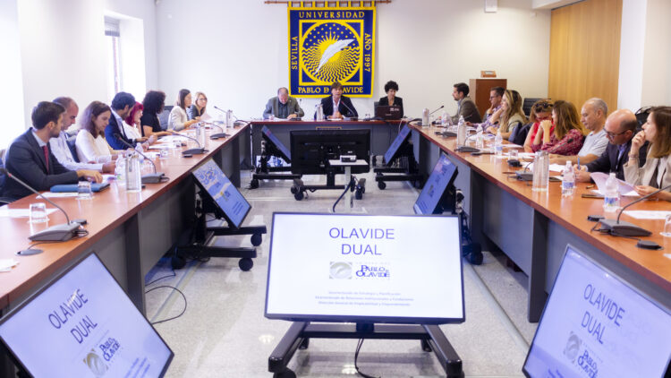

Pioneros en la implantación de grados duales en Andalucía

La Escuela de Ingeniería ha confirmado hoy la implantación del sistema de Formación Dual para los matriculados en el último curso.
Este modelo integra formación universitaria y experiencia profesional remunerada en empresas e instituciones.